第四节 xDS：控制面和数据面的通信桥梁
通过查询一个或多个管理服务器获取数据以发现动态资源变更，比如 Router、Cluster、EndPoint 等，我们把这些发现服务及其对应的 API 称为 xDS 。
xDS 最大的价值就是定义了一套可扩展的通用微服务控制 API，这些API不仅可以做到服务发现，也可以做到路由发现、集群发现，可以说所有配置都能通过发现的方式解决，这是一种全新的解决方案，所以 xDS API 不仅被用在了 Service Mesh 中，也用在了一些 RPC 框架中，比如 gRPC 就是用 xDS 协议做服务发现的。
1、xDS 概念介绍
xDS 包含
- LDS（监听器发现服务）、
- CDS（集群发现服务）、
- EDS（节点发现服务）、
- SDS（密钥发现服务）
- RDS（路由发现服务）。
xDS 中每种类型对应一个发现的资源，这些类型数据存储在 xDS 协议的 Discovery Request 和 Discovery Response 的 TypeUrl 字段中, 这个字段按照以下格式存储：
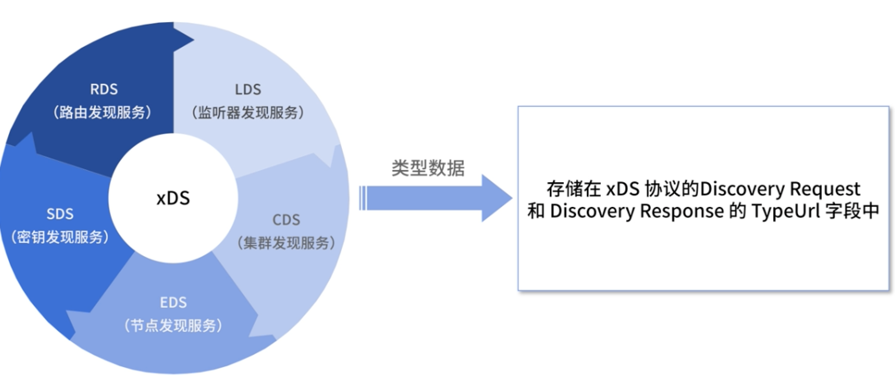
type.googleapis.com/<resource type>
比如 type.googleapis.com/envoy.api.v2.Cluster 就表明是 Cluster 类型的资源，需要按照 Cluster 类型处理数据。
envoy.api.v2.Listener（LDS）：对应 Listener 数据类型，包含了监听器的名称、监听端口、监听地址等信息，通过动态更新此类型，可以动态新增监听器或者更新监听器的地址端口等信息。
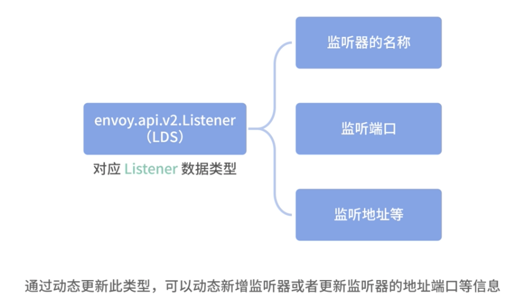
LDS 的数据结构如下：
{
"name": "...",
"address": "{...}",
"filter_chains": [],
"use_original_dst": "{...}",
"per_connection_buffer_limit_bytes": "{...}",
"metadata": "{...}",
"drain_type": "...",
"listener_filters": [],
"listener_filters_timeout": "{...}",
"continue_on_listener_filters_timeout": "...",
"transparent": "{...}",
"freebind": "{...}",
"socket_options": [],
"tcp_fast_open_queue_length": "{...}",
"traffic_direction": "...",
"udp_listener_config": "{...}",
"api_listener": "{...}",
"connection_balance_config": "{...}",
"reuse_port": "...",
"access_log": []
}
envoy.api.v2.RouteConfiguration（RDS）：对应 Envoy 中的 Route 类型，用于更新 virtual_hosts，以及 virtual_hosts 包含的路由表信息、路由规则、针对路由的限流、路由级别的插件等，包括路由匹配到的 Cluster。
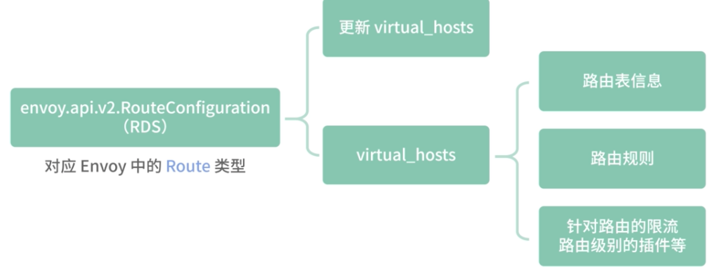
RDS 的数据结构如下：
{
"name": "...",
"virtual_hosts": [],
"vhds": "{...}",
"internal_only_headers": [],
"response_headers_to_add": [],
"response_headers_to_remove": [],
"request_headers_to_add": [],
"request_headers_to_remove": [],
"most_specific_header_mutations_wins": "...",
"validate_clusters": "{...}"
}
envoy.api.v2.Cluster（CDS）：对应 Envoy 中的 Cluster 类型，包含了 Cluster 是采用静态配置数据，还是采用动态 EDS 发现的方式，包括 Cluster 的负载均衡策略、健康检查配置等，以及服务级别的插件设置。
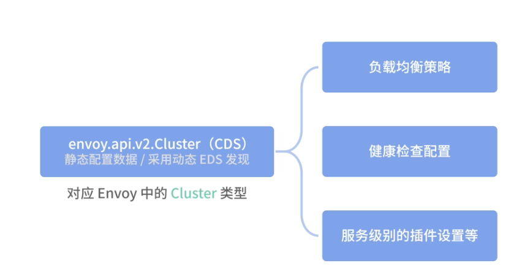
CDS 的数据结构如下：
{
"transport_socket_matches": [],
"name": "...",
"alt_stat_name": "...",
"type": "...",
"cluster_type": "{...}",
"eds_cluster_config": "{...}",
"connect_timeout": "{...}",
"per_connection_buffer_limit_bytes": "{...}",
"lb_policy": "...",
"hosts": [],
"load_assignment": "{...}",
"health_checks": [],
"max_requests_per_connection": "{...}",
"circuit_breakers": "{...}",
"tls_context": "{...}",
"upstream_http_protocol_options": "{...}",
"common_http_protocol_options": "{...}",
"http_protocol_options": "{...}",
"http2_protocol_options": "{...}",
"extension_protocol_options": "{...}",
"typed_extension_protocol_options": "{...}",
"dns_refresh_rate": "{...}",
"dns_failure_refresh_rate": "{...}",
"respect_dns_ttl": "...",
"dns_lookup_family": "...",
"dns_resolvers": [],
"use_tcp_for_dns_lookups": "...",
"outlier_detection": "{...}",
"cleanup_interval": "{...}",
"upstream_bind_config": "{...}",
"lb_subset_config": "{...}",
"ring_hash_lb_config": "{...}",
"original_dst_lb_config": "{...}",
"least_request_lb_config": "{...}",
"common_lb_config": "{...}",
"transport_socket": "{...}",
"metadata": "{...}",
"protocol_selection": "...",
"upstream_connection_options": "{...}",
"close_connections_on_host_health_failure": "...",
"drain_connections_on_host_removal": "...",
"filters": [],
"track_timeout_budgets": "..."
}
envoy.api.v2.ClusterLoadAssignment（EDS）：EDS，也就是我们常说的服务发现。包含服务名、节点信息和 LB 策略等数据。
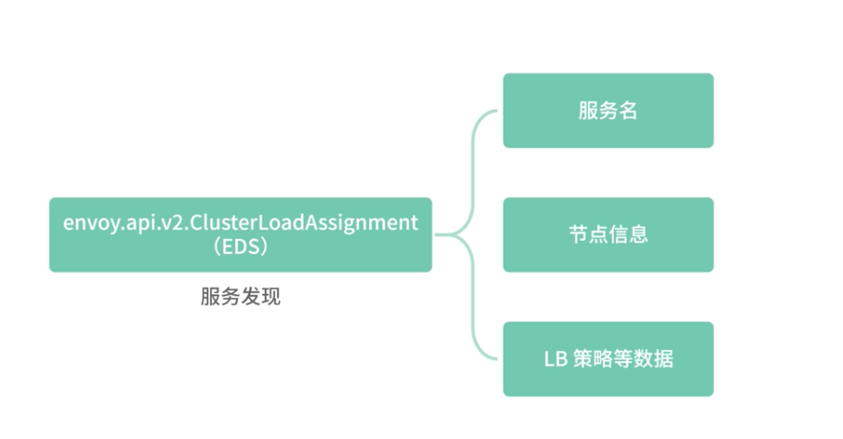
EDS 的数据结构如下：
{
"cluster_name": "...",
"endpoints": [],
"policy": "{...}"
}
envoy.api.v2.Auth.Secret（SDS）：用于发现证书信息，以动态更新证书。
早期 Istio 使用变更 TLS 证书文件，然后热重启 Envoy 的方式更新证书，现在通过 SDS 即可动态更新证书。
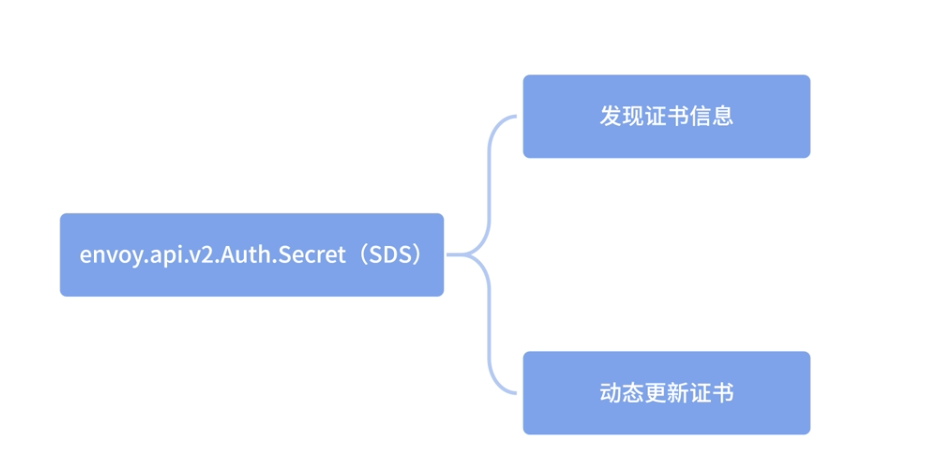
SDS 的数据结构如下：
{
"name": "...",
"tls_certificate": "{...}",
"session_ticket_keys": "{...}",
"validation_context": "{...}",
"generic_secret": "{...}"
}
Envoy xDS 协议最早并没有采用 gRPC 流式订阅，而是采用 rest-json 轮询的模式实现，后来因为 gRPC 流式订阅数据更新更加及时，性能也相对高效，所以在 v2 版本转向了 gRPC 的方式更新数据。
接下来我们主要看一下 gRPC 流式订阅模式。
3、gRPC 流式订阅
3-1 API 请求顺序
典型的 HTTP 路由场景，客户端需要先获取 Listener 资源，通过 Listener 资源拿到 Route 的配置。
Route 中包含一个或者多个 Cluster 集群资源，通过 Cluster 集群的信息再获取集群节点的信息，这样整个请求链路就完成了。
3-2 全量请求和增量请求
传统的 xDS 协议会全量响应订阅数据，对于中途新增的资源订阅来说，这无疑是资源浪费，所以 xDS 新增了增量订阅。
也就是说，当出现新的资源时，只需向 Management Server 发送新增的资源，Management Server 也只会返回新增资源的数据。
3-3 多条请求流和单条请求流
xDS 协议并不约束在请求多个资源时，多个资源使用同一个请求流，还是每个资源各使用一个请求流，Management Server 应该同时支持这两种模式。
3-4 在一个连接请求多个资源
在早期的设计中，xDS 被设计为多个连接，比如 CDS、EDS 分别和 Management Server 建立连接。在后续的改进中，支持在一条连接中按照顺序获取 xDS 中的各种 API，比如先请求 CDS，然后请求 EDS。
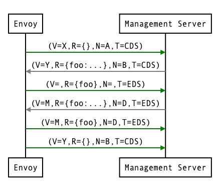
4、xDS 协议详解
4-1 xDS 协议详解
xDS API 的基础知识
一个请求信息示例：
version_info:
node: { id: envoy }
resource_names:
- foo
- bar
type_url: type.googleapis.com/envoy.api.v2.ClusterLoadAssignment
response_nonce:
如上述内容，每个请求流都带有一个 version_info 表明版本信息。这个例子中的 version_info 为空，表示这是连接中的第一个请求流，后续会根据 Management Server 推送的 version_info传递。
Node 中的 ID 则表明机器信息，需要传递机器的唯一标识，可以用机器的 hostname。
只有流上的第一个请求需要携带这个字段，后续如果推送发生了变化，也以第一个为准，因为这个值在 Management Server 会被绑定在连接对应的 stream 上。
resource_names 是一个多态信息，在不同的 xDS 类型中表示不同的意思，这里是 Cluster 集群的名称。
type_url 表示 xDS 的类型，这里是 CDS，即集群发现服务。
response_nonce 是 Management Server 推送的响应唯一标识，响应信息中的 Nonce 会作为请求信息中的 response_nonce 发送，就像一会我们将在资源更新部分讲解的一样，Nonce 主要是用来消除 ACK 和 NACK 之间的歧义。
在这个例子中，因为是首次请求，response_nonce 为空。
version_info: X
resources:
- foo ClusterLoadAssignment proto encoding
- bar ClusterLoadAssignment proto encoding
type_url: type.googleapis.com/envoy.api.v2.ClusterLoadAssignment
nonce: A
version_info：Management Server 响应或者推送给客户端 Envoy 的消息中，都会携带一个最新的版本号。- resources：这个是返回请求信息中
resource_names对应的 Protobuf 协议的结构体。 type_url：和请求信息中的意思相同。- Nonce：每次响应会携带一个 Nonce 作为唯一标识，用于客户端的 ACK/NACK 或者区分资源更新到底是响应哪个推送数据。
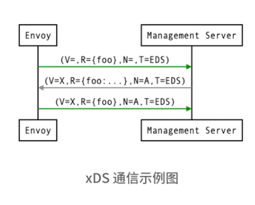
4-2 ACK 和 NACK&
- 在收到 Management Server 推送的新版本数据后，Envoy 会响应 ACK 或者 NACK 告知 Management Server 是否更新版本成功。
- ACK 代表更新版本成功，这时会携带 Management Server 推送的最新版本号发送 ACK 信息；
- NACK 代表更新版本失败，这时会携带旧的版本号发送 NACK 信息。
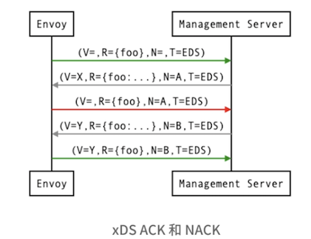
4-3 资源更新
如果发现的数据出现变化，依赖发现数据的其他配置就要及时更新。
举个简单的例子，比如 CDS 的 Cluster 集群信息发生了变化，那就意味着用户要订阅的服务列表发生了变化，因此需要通过 EDS 的服务发现信息，传递新订阅的集群信息到 EDS。
如下图所示 ，比如最早用户只订阅了 foo 这个服务，但是这时 CDS 传递了新的 bar 服务给到了 Envoy，这时就需要往 EDS 发送 foo 和 bar 两个服务的订阅信息。
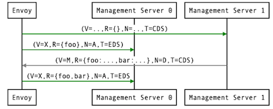
- 服务 A 原本依赖服务 foo，但经过了一次版本更新，服务 A 同时依赖服务 foo 和服务 bar，这个时候 CDS 就会推送 foo 和 bar 的信息给到 Envoy，Envoy 就会让 EDS 进行资源更新。
需要注意的是，Discovery Request 除了首次用来进行资源订阅，后面基本上都是用来做 ACK 或者 NACK 确认的
- Discovery Request 会在 ACK 之后用相同的 version_info 发送额外的 Discovery Request 信息，让 Management Server 更新资源信息。在上面的例子中，它会为版本 X 额外发送一个
resource_names，作为{foo, bar}数据的 Discovery Request 。
但是，你需要注意的是，这里可能会发生冲突。比如 Management Server在收到 V=X的确认消息后，foo 服务的 EndPoints 信息发生了变化，这时 Management Server会推送一个新版本 V=Y 的消息给 Envoy，如果 Envoy 发送 V=X 的新资源订阅消息给 Management Server，Management Server 可能会误认为 Envoy 拒绝了 V=Y 的新版本推送。
那么如何解决这个问题呢？ Envoy 引入了 Nonce，每个请求和响应都对应唯一的 Nonce，因为 Envoy 的新订阅消息携带的 Nonce 是 A，而 Management Server 返回的 V=Y的 Nonce 是 B，所以并不会误认为是 Envoy 拒绝了新数据的更新。
Envoy 的这个设计我觉得有点绕，实际上在 Istio 的控制面中，也就是这里的 Management Server，并没有完全遵守上面提到的 Nonce和 version_info 的约定，而是采用了一种更简单、直白的方式解决上面提到的冲突问题。
Istio 判断了传递的 resource_names 的 Clusters 信息是否发生变化，如果发生变化，则不认为是 ACK 或者 NACK，直接当作资源更新处理。显然这样的逻辑更易于理解。
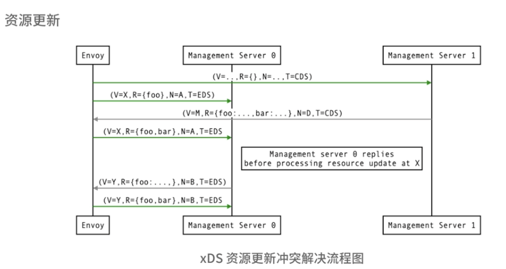
5、总结
Service Mesh 中数据面和控制面的通信桥梁——xDS 协议，通过 xDS 协议我们可以做到 discovery everything，所有配置都可以通过发现的方式解决，这是 Envoy xDS 架构为微服务世界带来的重大变革。
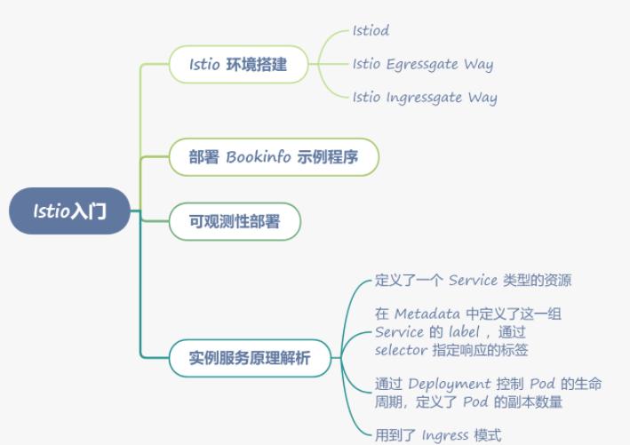